Centavinhos · Etapa 3
Gerado em 16/10/2026 12:43
Testes
Regras (lib/domain)74 de 74
- test/domain/cadastros_test.dart
- ✓nomes limpa espaços nas pontas e repetidos
- ✓nomes tag perde o # do começo
- ✓nomes comparação ignora maiúsculas e acentos
- ✓motivoNomeInvalido nome livre passa
- ✓motivoNomeInvalido nome vazio
- ✓motivoNomeInvalido repetido entre os ativos
- ✓motivoNomeInvalido repetido com um arquivado sugere desarquivar
- ✓motivoNomeInvalido tag compara sem o #
- ✓lerDiaDoMes de 1 a 31
- ✓lerDiaDoMes fora da faixa ou vazio
- ✓motivoParaNaoTirarConta conta livre pode sair
- ✓motivoParaNaoTirarConta última conta ativa fica
- ✓motivoParaNaoTirarConta conta que paga cartão ativo fica
- ✓motivoDataSaldoInvalida hoje e dias anteriores servem
- ✓motivoDataSaldoInvalida futuro não serve
- ✓motivoDataSaldoInvalida data inválida
- ✓textos de contagem subcategorias
- ✓textos de contagem uso de tags
- test/domain/data_digitada_test.dart
- ✓dd/mm completa com o ano de hoje
- ✓dd/mm/aaaa
- ✓aceita dia e mês com um número só e espaços
- ✓datas que não existem
- ✓29/02 só em ano bissexto
- ✓textos que não são data
- test/domain/dinheiro_e_datas_test.dart
- ✓formatarCentavos valores pequenos
- ✓formatarCentavos milhares
- ✓formatarCentavos negativo com o sinal de menos tipográfico
- ✓datas dia e mês no formato do banco
- ✓datas dia no formato da tela e leitura do formato do banco
- test/domain/fatura_test.dart
- ✓novomês da fatura exemplo do escopo: fecha dia 5 e vence dia 12
- ✓novomês da fatura compra no dia do fechamento vai para a fatura seguinte
- ✓novomês da fatura vencimento antes do fechamento cai no mês seguinte ao fechamento
- ✓novomês da fatura virada do ano
- ✓novomês da fatura fechamento no dia 31 vira o último dia dos meses mais curtos
- ✓novomês da fatura compra no dia 31 com fechamento no 31
- ✓novovencimento da fatura dia do vencimento no mês da fatura
- ✓novovencimento da fatura dia que não existe no mês vira o último dia
- ✓novodatas da fatura mês por extenso e leitura de AAAA-MM
- ✓novodatas da fatura último dia do mês e dia no mês, passando de dezembro
- test/domain/lancamento_test.dart
- ✓novomulticategoria contador com o que falta, como no escopo
- ✓novomulticategoria soma que bate fecha a distribuição
- ✓novomulticategoria passar do total mostra o que sobra
- ✓novomulticategoria categoria com valor vazio não fecha, mesmo com a soma certa
- ✓novomulticategoria sem limite de categorias
- ✓novomotivo para não salvar tudo certo
- ✓novomotivo para não salvar cada campo obrigatório, na ordem do formulário
- ✓novomotivo para não salvar com uma categoria só, o valor dela é o total
- ✓novomotivo para não salvar data no futuro e no passado distante são aceitas
- ✓novomês de referência no cartão é o mês da fatura; nas contas, o da data
- ✓novosugestões nome contém o texto, sem diferenciar maiúsculas nem acentos
- ✓novosugestões campo vazio não sugere nada
- ✓novosugestões do mais recente ao mais antigo, até 8
- ✓novosugestões categoria principal e subcategoria aparecem na busca
- test/domain/valor_caixa_eletronico_test.dart
- ✓digitar começa em R$ 0,00
- ✓digitar cada número entra pela direita, como no escopo
- ✓digitar vírgula, ponto e letras são ignorados
- ✓digitar agrupa milhares
- ✓digitar para no limite de 11 números
- ✓apagar backspace tira o último número
- ✓apagar apagar tudo volta para R$ 0,00
- ✓colar "12,50" vira R$ 12,50
- ✓colar aceita o símbolo e os milhares
- ✓colar texto sem centavos é lido como reais
- ✓colar um número só depois da vírgula vira dezena de centavos
- ✓colar texto sem números não muda o valor
- ✓colar valor acima do máximo não muda o valor
- ✓colar sinal de menos é ignorado sem permiteNegativo
- ✓colar sinal de menos vale com permiteNegativo
- ✓troca de sinal "-" deixa negativo e mostra −R$
- ✓troca de sinal "-" de novo volta para positivo
- ✓troca de sinal com o campo zerado, o sinal fica guardado para os próximos números
- ✓troca de sinal apagar com o valor zerado tira o sinal
- ✓troca de sinal "-" é ignorado sem permiteNegativo
- ✓troca de sinal começa com valor negativo quando permitido
Banco49 de 49
- test/data/cadastros_test.dart
- ✓migração banco da versão 1 ganha a coluna arquivada em tags e mantém as tags
- ✓contas cria e edita com saldo inicial e data
- ✓contas lista as ativas primeiro, em ordem de nome sem ligar para acentos
- ✓contas conta nova não está em uso; com lançamento, transferência ou cartão, está
- ✓contas exclui a conta nunca usada e arquiva a usada
- ✓contas não arquiva nem exclui a última conta ativa
- ✓contas não arquiva a conta que paga um cartão ativo
- ✓cartões cria e edita fechamento, vencimento e conta de pagamento
- ✓cartões exclui o cartão nunca usado
- ✓cartões cartão usado só é arquivado
- ✓cartões só desarquiva com a conta de pagamento ativa
- ✓categorias árvore em ordem de nome, com as subcategorias de cada uma
- ✓categorias subcategoria herda o tipo da principal e tem um nível só
- ✓categorias cria e renomeia
- ✓categorias arquivar a principal leva as subcategorias; desarquivar traz de volta
- ✓categorias desarquivar uma subcategoria traz a principal, mas não as irmãs
- ✓categorias uso: a principal conta como usada quando uma subcategoria foi usada
- ✓categorias exclui a principal nunca usada junto com as subcategorias
- ✓categorias não exclui categoria usada, nem a principal de uma subcategoria usada
- ✓tags cria sem o #, renomeia e conta os lançamentos
- ✓tags exclui a tag nunca usada e arquiva a usada
- ✓apagarTudo também limpa as tags arquivadas
- test/data/database_test.dart
- ✓cria as doze tabelas
- ✓cria os índices do escopo
- ✓chaves estrangeiras ligadas
- ✓categorias padrão: 10 de despesa, 5 de ganho e 25 subcategorias
- ✓configurações iniciais
- ✓lançamento com conta e cartão ao mesmo tempo é recusado
- ✓lançamento sem conta e sem cartão é recusado
- ✓estorno sem cartão é recusado
- ✓cartão com conta de pagamento inexistente é recusado
- ✓conta com saldo inicial negativo é gravada
- ✓boas-vindas grava contas e cartões e marca como concluída
- ✓boas-vindas sem contas não grava nada
- ✓dados de exemplo geram um cenário válido e concluem as boas-vindas
- ✓dados de exemplo apagarTudo volta ao banco recém-criado
- test/data/lancamentos_test.dart
- ✓novosalvar despesa no cartão com duas categorias, tag nova e observação
- ✓novosalvar ganho na conta conta pelo mês da data, sem fatura
- ✓novosalvar fatura trocada à mão fica marcada
- ✓novosalvar categoria principal com subcategorias pode ser escolhida direto
- ✓novosalvar tag arquivada digitada é reaproveitada e desarquivada
- ✓novosalvar editar troca os dados, as categorias e as tags e mantém o resto
- ✓novosalvar nunca grava soma de categorias diferente do valor nem cartão sem fatura
- ✓novonome conhecido nomes usados por tipo, do mais recente ao mais antigo, sem repetir
- ✓novonome conhecido repete da última vez as categorias, o cartão e as tags
- ✓novonome conhecido usa a vez mais recente
- ✓novonome conhecido deixa de fora o que foi arquivado
- ✓novonome conhecido nome nunca usado no tipo não preenche nada
- ✓novoexemplos o gerador usa a regra da fatura: compra no fechamento vai para a seguinte
Interface48 de 48
- test/ui/app_test.dart
- ✓banco novo abre nas boas-vindas1.1 s
- ✓com as boas-vindas concluídas, abre na tela do mês
- ✓saldo: digitar 2, 0, 0, 0, 0 e "-" mostra −R$ 200,00
- ✓Tab até "Começar" mostra o anel de foco
- ✓formatador: backspace, vírgula e texto colado
- test/ui/cadastros_test.dart
- ✓contas lista com tipo, data e saldo inicial; usada arquiva1.4 s
- ✓contas nova conta: travas do Salvar e conta salva com data passada
- ✓contas Enter no nome salva e Esc cancela
- ✓contas campo de data reescreve dd/mm como dd/mm/aaaa ao sair
- ✓contas conta que paga cartão ativo não é arquivada
- ✓categorias despesas e ganhos, com as subcategorias
- ✓categorias nova subcategoria não repete o nome de uma irmã
- ✓categorias excluir categoria nunca usada leva as subcategorias
- ✓tags arquivar some da lista; "Mostrar arquivadas" traz de volta
- ✓cartões lista e detalhe do cartão escolhido
- ✓cartões novo cartão: travas do Salvar e cartão escolhido depois
- test/ui/lancamento_test.dart
- ✓novojanela Ctrl+N abre com o foco no nome, Salvar travado e Esc fecha1.7 s
- ✓novojanela Ctrl+N com a janela aberta não abre outra
- ✓novojanela travas do Salvar, na ordem dos campos1.2 s
- ✓novoteclado ordem do Tab e Enter no último campo salva1.2 s
- ✓novoteclado Enter com o Salvar travado não fecha nem tira o foco
- ✓novoteclado Enter e Esc no menu fechado salvam e cancelam
- ✓novoteclado Enter no menu fechado salva
- ✓novonome conhecido sugestão preenche categorias, cartão e fatura, sem o valor1.1 s
- ✓novonome conhecido voltar ao nome escolhido não reabre a lista; Esc fecha de primeira
- ✓novonome conhecido Esc com a lista aberta só fecha a lista
- ✓novonome conhecido preenche as tags e abre "Mais detalhes"
- ✓novonome conhecido nomes de ganho só aparecem no ganho
- ✓novocategorias a segunda categoria abre os valores e leva o foco ao primeiro
- ✓novocategorias categoria principal e subcategoria aparecem na busca
- ✓novocategorias categoria arquivada não aparece na busca
- ✓novocategorias trocar para ganho tira as categorias de despesa e o cartão
- ✓novofatura trocada à mão não muda com a data; o mês calculado volta ao automático
- ✓novofatura escolher de novo o mês calculado volta ao cálculo
- ✓novomais detalhes tag nova, tag existente e observação
- ✓novoeditar abre preenchida, com o título de edição, e grava no mesmo lançamento
- test/ui/tema_test.dart
- ✓verde claro segue a tabela do escopo
- ✓verde escuro segue a tabela do escopo
- ✓roxo claro segue a tabela do escopo
- ✓roxo escuro segue a tabela do escopo
- ✓azul claro segue a tabela do escopo
- ✓azul escuro segue a tabela do escopo
- ✓cor do sistema usa a cor de destaque e harmoniza o aviso
- ✓cor do sistema sem cor de destaque cai no verde
- ✓fontes: Libron nos títulos, Roboto Flex nos textos, números fixos
- ✓anel de foco aparece em todos os botões só com foco (dark)
- ✓anel de foco aparece em todos os botões só com foco (light)
- ✓valores guardados no banco
Capturas de tela25 de 25
- test/golden/telas_golden_test.dart
- ✓boas-vindas, verde claro1.3 s
- ✓boas-vindas, verde escuro
- ✓boas-vindas, roxo escuro
- ✓boas-vindas com foco no "Começar", verde claro
- ✓boas-vindas com foco no "Começar", verde escuro
- ✓tela do mês, verde claro
- ✓ajustes, verde claro
- ✓cadastros contas, verde claro
- ✓cadastros contas com as arquivadas, verde claro
- ✓cadastros categorias, verde claro
- ✓cadastros categorias, verde escuro
- ✓cadastros categorias de ganho, roxo claro
- ✓cadastros tags, verde claro
- ✓cadastros janela de editar conta, verde claro
- ✓cadastros janela de nova conta, verde escuro
- ✓cartões cartões, verde claro
- ✓cartões cartões, verde escuro
- ✓cartões cartões sem nenhum cadastrado, verde claro
- ✓cartões janela de editar cartão, verde claro
- ✓novolançamento despesa com uma categoria, verde claro
- ✓novolançamento despesa no cartão com duas categorias, verde claro1.1 s
- ✓novolançamento despesa no cartão com duas categorias, verde escuro1.0 s
- ✓novolançamento ganho, roxo claro
- ✓novolançamento sugestões de nome abertas, verde claro
- ✓novolançamento "Mais detalhes" aberto, verde claro
App real (integração)6 de 6
- integration_test/boas_vindas_test.dart
- ✓primeira abertura completa: conta negativa, cartão e Ctrl+N11.8 s
- ✓barra lateral troca de tela e mantém o botão +3.5 s
- integration_test/cadastros_test.dart
- ✓conta com saldo de outra data, categoria nova, excluir e arquivar13.2 s
- integration_test/cartoes_test.dart
- ✓novo cartão, editar o vencimento e conta que paga não arquiva9.8 s
- integration_test/lancamento_test.dart
- ✓novolançamento só pelo teclado: Ctrl+N, Tab e Enter7.8 s
- ✓novonome conhecido, duas categorias no cartão e tag nova7.1 s
Capturas de tela

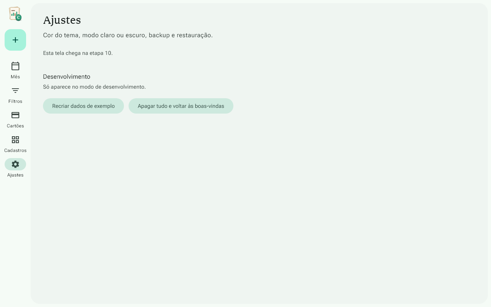

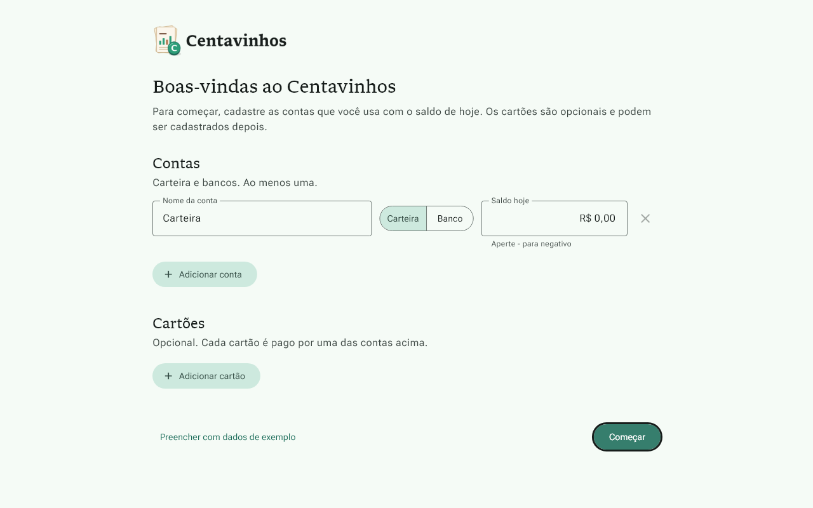


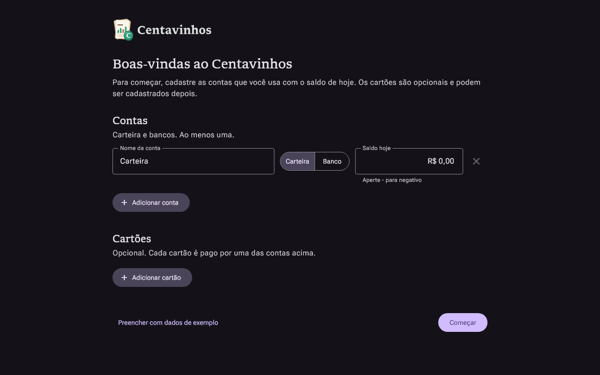


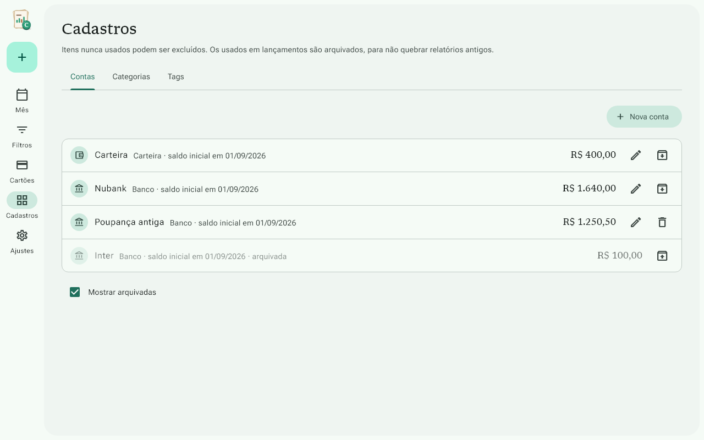


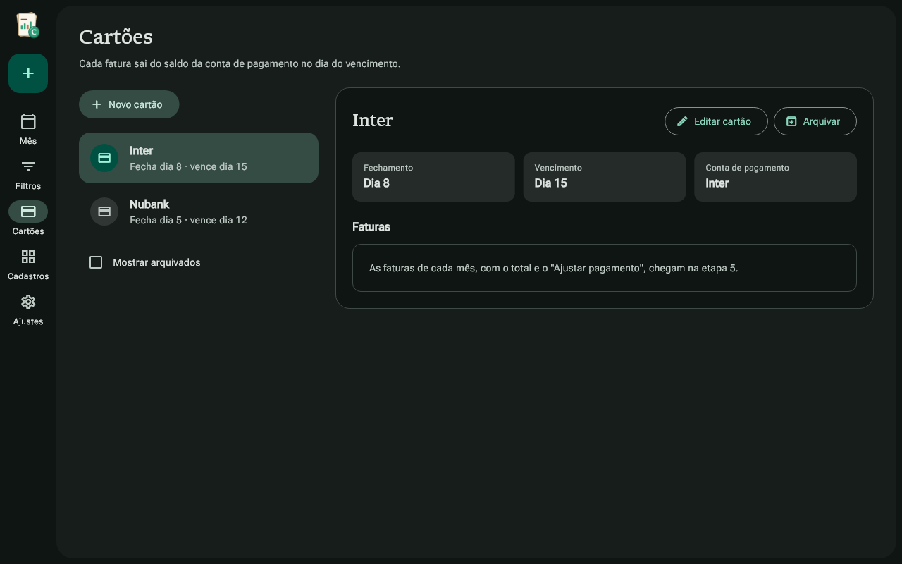


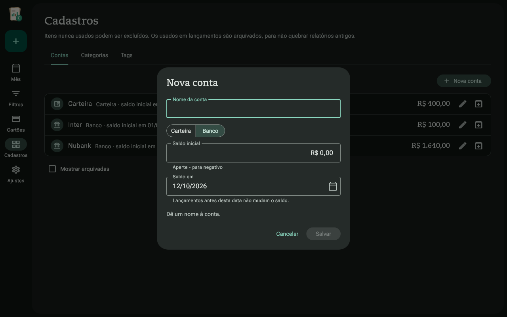

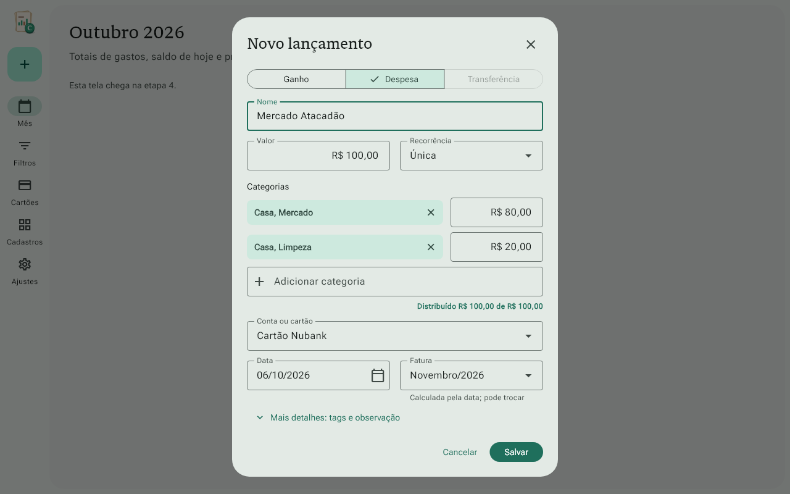

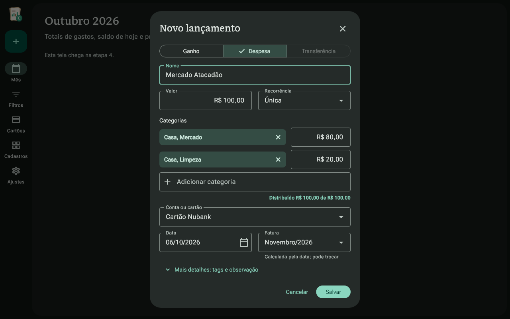

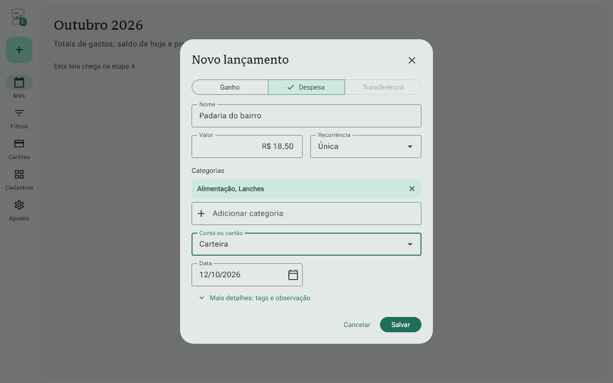

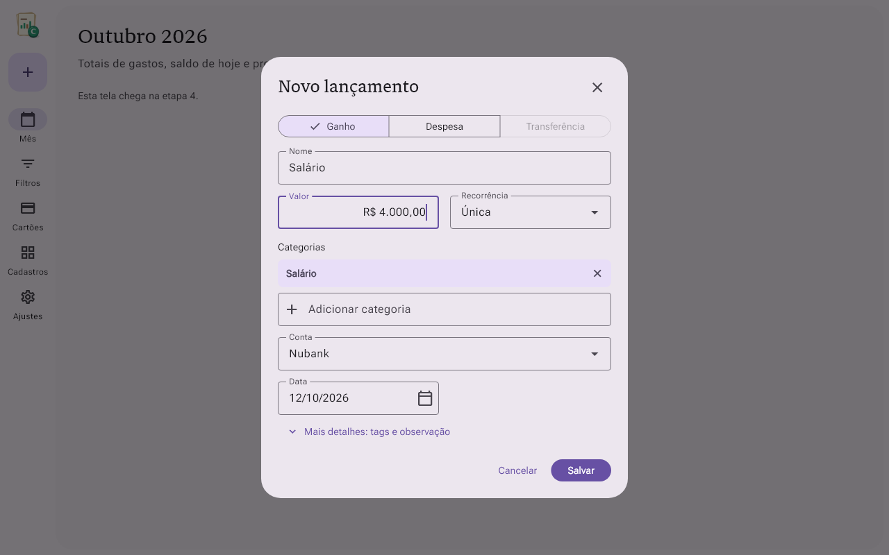

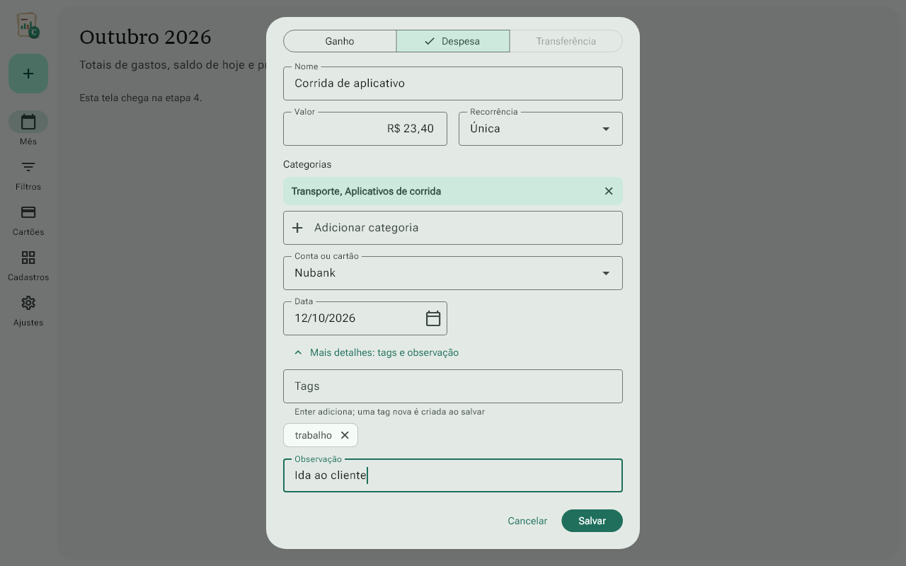

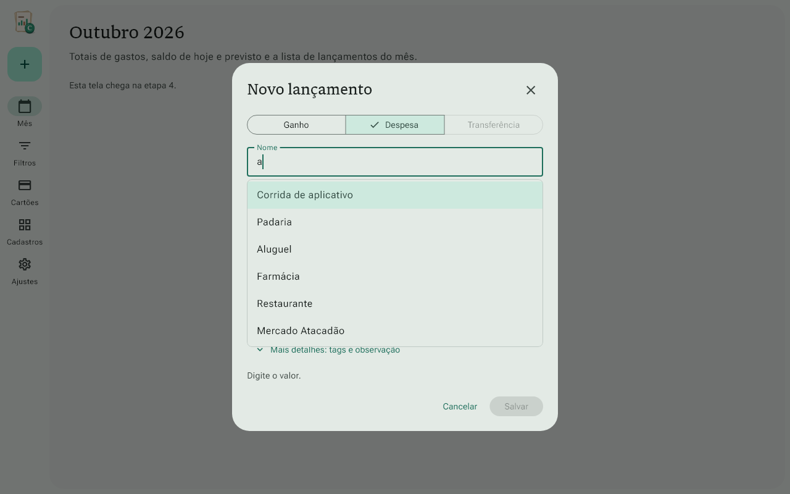

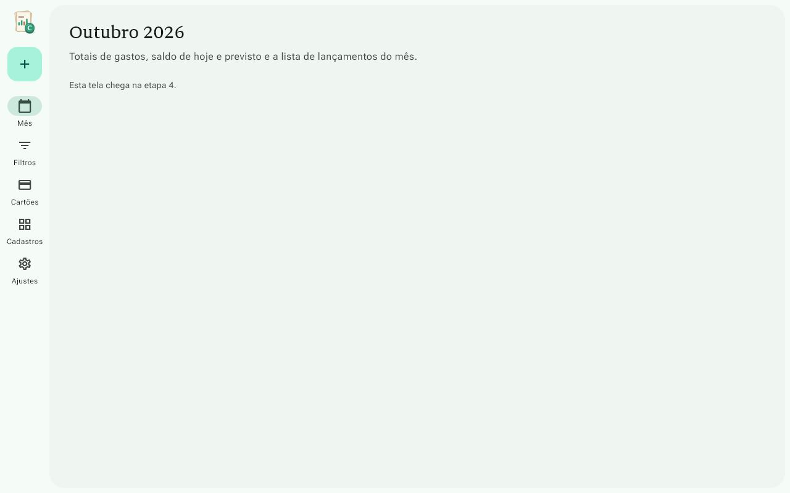
Roteiro para testar na mão
· As marcações ficam só neste navegador; o roteiro-manual.md não muda.
Roteiro manual · Etapa 3
Abra com flutter run -d windows. Para ter dados para testar, vá em Ajustes → "Recriar dados de exemplo" (só no modo de desenvolvimento). Os exemplos têm as contas Carteira, Nubank e Inter, o cartão Nubank (fecha dia 5, vence dia 12), o cartão Inter (fecha dia 8, vence dia 15) e lançamentos como "Mercado Atacadão" (Casa, Mercado + Casa, Limpeza, no cartão Nubank) e "Corrida de aplicativo" (na conta Nubank, com a tag "trabalho"). Os exemplos são criados de novo com a regra nova da fatura.
Ainda não há lista de lançamentos (ela chega na etapa 4). Para conferir o que foi salvo, use a mensagem no rodapé, a sugestão do nome repetido e o "usada em N lançamentos" da aba Tags em Cadastros.